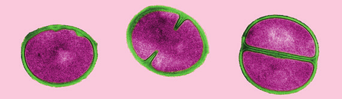
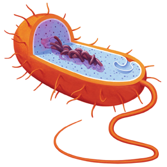

El reino moneras incluye organismos unicelulares sencillos como bacterias y algas cianofíceas, también denominadas cianobacterias. Todos tienen en común el hecho de que sus células son procariotas. La única célula que forma su cuerpo es pequeña y solo se puede observar al microscopio.
Su estructura es sencilla:
Una pared celular envuelve la membrana plasmática, que contiene el citoplasma.
En el citoplasma se encuentra el material genético disperso, así como ribosomas que fabrican proteínas. Carecen de mitocondrias y de cloroplastos.
Pueden tener uno o más flagelos para desplazarse por el medio y fimbrias que emplean en fijarse al sustrato o a otras células.
Las funciones vitales del reino moneras
Su nutrición puede ser autótrofa o heterótrofa. Los seres autótrofos se dividen, a su vez, en fotosintéticos o quimiosintéticos. Entre los organismos heterótrofos cabe diferenciar tres tipos: saprófitos (se alimentan de materia orgánica en descomposición), parásitos (se alimentan de otros organismos vivos, a los que causan perjuicio) y simbióticos (viven asociados a otros organismos, con los que mantienen una relación de beneficio mutuo).
Se relacionan con el medio a través de respuestas como el movimiento de los flagelos, pero carecen de órganos de los sentidos.
Su reproducción es asexual por bipartición: una célula madre se divide en dos células hijas idénticas.

Etapas de la división celular

Ilustración de célula bacterianaEnsalada de algas marinasForma geométrica simple